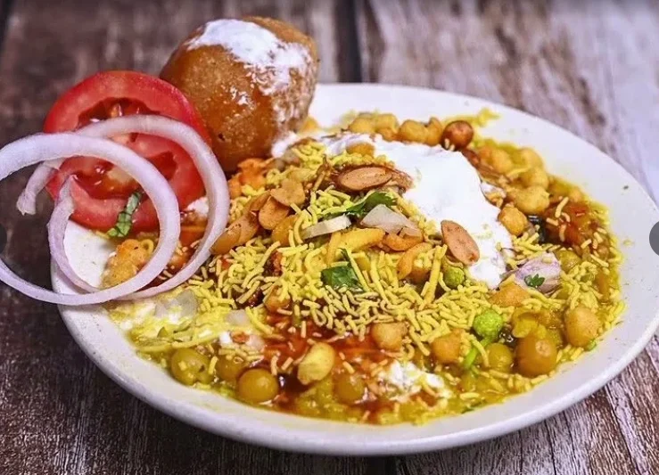
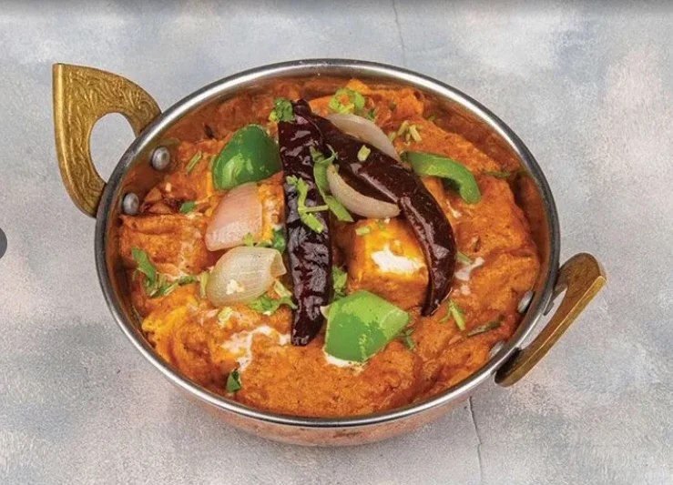
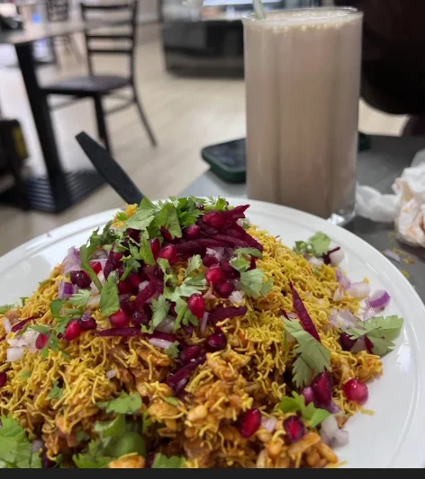
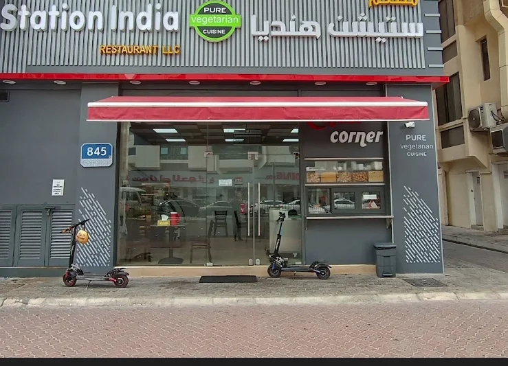

Pure vegetarian food, cooked fresh in Abu Dhabi
Gujarati thalis, Punjabi curries, crisp dosas and street-style chaat. Every dish is 100% vegetarian. Open daily 7 AM to 11 PM.


What makes us special
One kitchen, four traditions of Indian vegetarian cooking.


Signature dishes
The plates guests order again and again.
Food for every hour
The sun button at the bottom left of your screen follows you through the site. Tap it to open the clock. Slide the clock from 7 AM to 11 PM to see what suits the hour, or press “Surprise me” for a full meal.

How to order
Pick your dishes
Tap Add to Cart on the menu.
Enter your details
Name, phone and, for delivery, building, floor and flat.
Send on WhatsApp
Your formatted order opens in WhatsApp. We confirm it there.
Guests say
★★★★★“I was delighted to find such a diverse range of vegetarian options… Punjabi combo thali is a must try.”
Neel Sakpal · Google review
★★★★★“An authentic taste of Indian food. Chats, roti’s, rice, delicious. After trying other veg restaurants, this is the best in Abu Dhabi.”
abhijit kulkarni · Google review
Questions
Is Station India fully vegetarian?
Yes. Every dish is 100% pure vegetarian, and Jain options such as Jain Pav Bhaji are available.
What are your opening hours?
We are open every day from 7 AM to 11 PM.
Can I order on WhatsApp?
Yes. Add dishes to your order and send it on WhatsApp, or message us directly.
Do you deliver?
Yes. Choose Delivery in your order and give your building, floor, flat and directions.
Which dish should I try first?
Guests recommend the Punjabi Combo thali, rava masala dosa and our chaat.
Visit us
Electra St, Al Danah – Zone 1, Abu Dhabi
Open daily, 7 AM to 11 PM
Tel 02 632 9526
